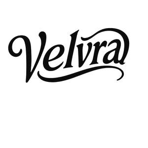

Trade Mark Journal No.2025/027 4 July 2025
UK00004221165 19 June 2025 (20,24)

- Class 20
- Pillows; Stuffed pillows; Beds, bedding, mattresses, pillows and cushions; Bath pillows; Scented pillows; Accent pillows; Neck pillows; U-shaped pillows; Inflatable pillows; Throw pillows; Nursing pillows; Latex pillows; Maternity pillows; Bamboo pillows; Travel pillows; Air pillows; Bean bag pillows; Bed mattresses; Neck-supporting pillows; Mattress toppers; Nap mats [cushions or mattresses]; Bedding for cots [other than bed linen]; Memory foam pillows; Cushions; Head supporting pillows; Bedding for nursery cots [other than bed linen]; Futon mattresses [other than childbirth mattresses]; Mattress (Straw -); Straw mattress; Mattress pads; Head positioning pillows for babies; Bedding, except linen; Mattresses; Feather beds; Support pillows for use in baby seating; Foam mattresses; Cushions (upholstery); Sofa beds; Bean bag cushions; Bed slats; Divan beds; Bumper guards for cribs, other than bed linen; Pet cushions; Cushions (Pet -); Straw mattresses; Clothes covers; Fitted fabric furniture covers; Removable covers for sinks; Protective covers for furniture [fitted]; Sinks (Removable mats or covers for -); Removable mats or covers for sinks; Covers for clothing [wardrobe]; Fitted crib rail covers; Covers (Shaped -) for furniture; Textile covers [fitted] for furniture; Covers (Garment -) [storage]; Garment covers [storage]; Seat covers [shaped] for furniture; Protective covers for furniture [shaped]; Bumper guards for cots, other than bed linen; Bed chairs; Bed rails; Bed frames; Air bed lounger; Bunk beds; Beds; Chair beds; Bed bases; Non-metal bed fittings; Bed frames of metal; Bed heads; Beds of wood; Foldaway beds; Fittings, not of metal (Bed -); Bed fittings, not of metal; Frames for bed canopies; Wooden beds; Folding beds; Soft furnishings [cushions]; Foam camping mattresses; Sleeping mats for camping [mattresses]; Bedsteads; Pouffes [furniture]; Divans made of wicker; Cushions [furniture]; Divans; Air cushions; Cots; Storage boxes for pillows [furniture]; Cots for babies; Ball catches [not of metal]; Porcelain pulls; Non-metal catches; Gravity catches (Non-metallic -); Sash window pulls, not of metal; Curtain embraces for holding back curtains; Ceramic pulls for furniture; Curtain embraces of plastics for holding back curtains; Towel stands [furniture]; Drawer pulls of glass; Blind pulls of non-metallic materials; Window stops of plastic; Drawer pulls of earthenware; Tie back hooks made of plastics [curtain]; Mattress bases; Replacement seat covers [fitted] for furniture; Textile covers [shaped] for furniture; Beds incorporating inner sprung mattresses; Latex mattresses; Mattresses [other than child birth mattresses]; Camping mattresses; Corner protectors of plastics; Fire resistant mattresses; Inner sprung mattresses; Air mattresses; Floating inflatable mattresses [airbeds]; Spring mattresses; Mattresses (Spring -); Inflatable mattresses for use when camping; Tree protectors [tubes] not of metal; Tree protectors, not of metal; Air mattresses for use when camping; Sleeping pads; Inflatable mattresses, other than for medical purposes; Plastic mesh cushioning sheets for lining shelves; Bumper guards for furniture; Support pillows for use in baby car safety seats; Inflatable neck support cushions; Headboards; Bamboo curtains; Curtains (Bamboo -); Curtain tie-backs; Decorative window finials; Decorative bead curtains; Fittings for curtains; Window shades [blinds]; Bead curtains; Window blinds [interior]; Bead curtains for decoration; Curtains (Bead -) for decoration; Brackets of (Non-metallic -) for hanging window draperies; Support rails for curtains; Window blinds; Decorative edging strips of wood for use with window fittings; Indoor window blinds [shades] [furniture]; Blinds (Indoor window -) [shades] furniture; Support rods for curtains; Indoor window blinds [shades]; Indoor blinds, and fittings for curtains and indoor blinds; Interior textile window blinds; Rings for curtains; Curtain tie-backs, not of textile; Poles for curtains; Interior window shutters; Indoor window blinds [shade] furniture; Indoor window blinds [shade] [furniture]; Drapery rods; Decorative edging strips of plastic for use with window fittings; Curtain rails; Rails (Curtain -); Rods for net curtains; Curtain fittings; Indoor window blinds [furniture]; Interior venetian blinds; Mouldings for mirrors; Curtain holdbacks, not of textile; Indoor window blinds; Window blinds [indoor]; Indoor window blinds of woven wood; Indoor window shades [furniture]; Indoor window blinds of textile; Horizontal venetian blinds [indoor] for windows; Furniture moldings; Curtain rods; Rods (Curtain -); Blackout blinds [slatted, indoor]; Horizontal slatted blinds [indoor] for doors; Window blinds made of wood [indoor]; Curtain suspension fittings; Louvre blinds [indoor]; Moldings [mouldings] for picture frames; Picture frames (Moldings [mouldings] for -); Indoor window shades of woven wood; Beach beds; Furniture being convertible into beds; Rods for beds; Clothes rails; Shower curtain rails; Fitted bedroom furniture; Bed casters, not of metal; Adjustable beds; Slatted bases for beds; Clothes hangers, clothes stands [furniture] and clothes hooks; Bassinettes; Bed-settees; Pillowforms; Chaise-longues; Showshelves; Coathooks; Easy-chairs; Babies' chairs; Coatstands; Strap-hinges, not of metal; Travel cots; Infant beds; Electric baby cradles; Cribs for babies; Baby bolsters; Furniture for babies; Baby walkers; Playpens for babies; Bath seats for babies; Mats for infant playpens; Infant playpens (Mats for -); Playpens (Mats for infant -); Baby gates; Baby head support cushions; Shower curtain rods; Shower curtain hooks; Curtain hooks; Hooks (Curtain -); Curtain rollers; Rollers (Curtain -); Curtain poles; Curtain embraces of metal for holding back curtains; Slatted indoor blinds for windows; Blackout blinds [indoor]; Curtain pins; Venetian blinds; Bamboo blinds; Expanding rails of plastics for net curtains; Indoor window blinds of paper; Horizontal venetian blinds [indoor] for doors; Curtain runners; Wooden blinds; Paper blinds; Internal venetian blinds; Curtain suspension devices; Chair cushions; Sofas; Seat cushions; Upholstered furniture; Leather furniture; Furniture and furnishings; Table decorations of plastic; Tables [furniture]; Table legs; Table tops; Tables; Trestle tables; Bench tables; Sideboard tables; Table leaves; Drawer runners (Non-metallic -); Dining tables; Kitchen tables; Bases for tables; Coffee tables; Picnic tables; Pedestal tables; Trestles for use as table supports; Drop-leaf tables; Bedside tables; Tea tables; Desks and tables; Counters [tables]; Side tables; Conference tables; Dining room tables; Marble tables; Folding tables; Console tables; Drawing tables; Display tables; Tables of metal; Mosaic tables; Table centres [ornaments] made of wood; Massage tables; Sleeping mats; Storage racks to hold vehicle mats; Sleeping mats of bamboo or straw; Children's mats used for sleeping; Mats, removable, for sinks; Reusable baby changing mats; Portable baby bath seats for use in bath tubs; Closets (Towel -) [furniture]; Towel closets [furniture]; Bath seats; Bath kneeling pads; Wooden tubs [not bath tubs]; Hand mirrors; Hand fans; Bathroom cupboards; Bathroom furniture; Bathroom stools; Bathroom cabinets; Bathroom mirrors; Bathroom vanities; Bathroom vanities [furniture]; Shower chairs; Toilet cabinets; Dispensers (Fixed -) for towels; Furniture for bathrooms; Bathroom fittings in the nature of furniture; Roofed wicker beach chairs; Beach beds incorporating wind shields; Hooks for towels (Non-metallic -); Household furniture; Beds for household pets; Containers made of wood [other than for household or kitchen use]; Wooden containers [other than for household or kitchen use]; Non-metallic containers [other than for household or kitchen use]; Non-metallic drums [other than for household or kitchen use]; Containers made of synthetic material [other than for household or kitchen use]; Containers (non-metallic -) for the handling of goods [other than household or kitchen use]; Embroidery frames; Frames (Embroidery -); Stretchers for embroidery; Portable infant beds; Beds for birds; Boxes made of paper coated wood; Glass doorknobs; Glass cabinets; Mirrors (silvered glass); Glass (Silvered -) [mirrors]; Silvered glass [mirrors]; Glass furniture; Glass knobs; Transparent doors of glass for furniture.
- Class 24
- Flat bed sheets; Bed sheets of paper; Fitted bed sheets; Valanced bed sheets; Bed sheets of plastic [not being incontinence sheets]; Bed sheets of plastic, not being incontinence sheets; Crib sheets; Cot sheets; Bath sheets; Bed blankets; Blankets (Bed -); Bed linen; Linen for the bed; Linen (Bed -); Bed linen and blankets; Bed linen of paper; Bath sheets (towels); Crib bumpers [bed linen]; Canopies (bed linen); Cot bumpers [bed linen]; Silk bed blankets; Bed clothes; Bed clothes and blankets; Bed quilts; Bed pads; Bed valances; Valance sheets; Bed linen and table linen; Infants' bed linen; Bed blankets made of cotton; Bed covers of paper; Bed coverings; Bed covers; Bed canopies; Bed spreads; Bed skirts; Fabric bed valances; Towel sheet; Comforters for beds; Sleeping bag sheet liners; Contour sheets; Bed throws; Pillowcases [pillow slips]; Valanced bed covers; Ticks (mattress and pillow coverings); Bed warmer covers; Valances for beds; Bed blankets made of man-made fibres; Bedsheets; Sofa blankets; Quilt bedding mats; Quilted blankets [bedding]; Comforters (bedding); Pillowcases; Paper pillowcases; Shams (Pillow -); Pillow shams; Textile fabrics for use in the manufacture of pillowcases; Bedspreads; Eiderdowns [quilts]; Coverlets [bedspreads]; Quilts of towel; Futon quilts; Linens; Fabrics for shirts; Linen [fabric]; Cotton blankets; Quilts; Fabric valances; Cotton fabrics; Flannel [fabric]; Shams; Woven linen fabrics; Counterpanes; Silk blankets; Cotton cloths; Chenille fabric; Tricot quilts; Fabric curtains; Silk filled quilts; Towelling coverlets; Hand-towels made of textile fabrics; Quilts made of terry cloth; Textile fabrics for making into linens; Chenile fabric; Duvets; Towels of textiles; Woven fabrics for cushions; Cotton fabric; Comforters; Cotton knitted fabric; Silk fabrics; Eiderdowns [down coverlets]; Fabrics for making curtains; Japanese cotton towels (tenugui); Linen lining fabric for shoes; Eiderdowns; Linen; Shirt fabrics; Kit comprised of fabrics for making quilts; Knitted fabrics of cotton yarn; Embroidery fabric; Towels; Fabrics; Precut fabrics for needlecraft; Handkerchiefs of textiles; Mats of linen; Bedroom textile fabrics; Fabrics made from linen, other than for insulation; Textile fabrics for use in the manufacture of sheets; Fabrics for use in making diapers; Textile fabrics for use in the manufacture of towels; Bath linen; Knitted fabrics; Corduroy fabrics; Curtains made of textile fabrics; Pillow covers; Covers for pillows; Duvet covers; Mattress covers; Cushion covers; Covers for cushions; Cushions (Covers for -); Covers for mattresses; Sofa covers; Covers for duvets; Quilt covers; Eiderdown covers; Contoured mattress covers; Comforters [covers]; Cot covers; Chair covers; Ticks [mattress covers]; Covers for eiderdown and duvets; Textile covers for duvets; Table covers of damask; Pillow slips; Canopy covers; Pillow cases; Table covers; Cushion covering materials; Covers for toilet lids of fabric; Table covers of plastic; Fitted toilet covers [fabric]; Canopies [covers for beds]; Toilet seat covers; Protective loose covers for mattresses and furniture; Toilet seat covers of textile; Bean bag covers; Fitted toilet lid covers of fabric; Covers (Fitted toilet lid -) of fabric; Covers (fitted toilet lid -)[fabric]; Seat covers [loose] for furniture; Textile piece goods for making cushion covers; Covers of textile for toilet seats; Covers [loose] for furniture; Loose covers for furniture; Furniture (Loose covers for -); Afghans [knitted covers]; Fitted toilet seat covers of textile; Unfitted fabric furniture covers; Protective covers for furniture [loose]; Table covers [not of paper]; Coverlets; Damask; Fabrics for use in covering armchairs; Kitchen linen; Diapered linen; Linen (Diapered -); Linen cloth; Bed linen made of non-woven textile material; Table linen; Bath linen, except clothing; Table linen of textile; Terry linen; Household linen; Linen (Household -); Textile napkins [table linen]; Household linen, including face towels; Textiles made of linen; Valence linen; Tick [linen]; Coasters [table linen]; Kitchen towels of cloth; Textile smallwares [table linen]; Kitchen towels [textile]; Kitchen towels of textile; Table linen, not of paper; Kitchen and table linens; Bedsheets of leather; Quilts of textile; Down quilts; Quilts filled with feathers; Batik fabrics; Quilts filled with stuffing materials; Quilts filled with down; Afghans; Textile fabrics for making into blankets; Wall fabrics; Textile fabrics; Fabrics being textile piece goods for use in patchwork; Silk fabrics for furniture; Knitted fabrics of silk yarn; Wool yarn fabrics; Piled fabrics; Knitted fabrics of wool yarn; Fabrics for use in making jerseys; Knitted fabric; Woven fabrics for furniture; Worsted fabrics; Lace fabrics; Grid-type fabrics; Woollen fabrics; Fabrics being textile piece goods for use in embroidery; Quilts filled with synthetic stuffing materials; Hemp yarn fabrics; Woven fabrics; Muslin fabric; Knit lace fabrics; Furnishing fabrics; Curtain fabrics; Lingerie fabrics; Textile fabrics in the piece; Fabric; Apparel fabrics; Woven fabrics for sofas; Silk fabrics for printing patterns; Textile fabrics for use in the manufacture of beds; Textile fabrics for lingerie; Quilts filled with half down; Knitted fabrics of chemical-fiber yarn; Fabrics being textile piece goods for use in tapestry; Jute fabrics; Laminated fabrics; Doilies of textile; Textile fabrics for use in the manufacture of curtains; Upholstery fabrics; Jersey fabrics for clothing; Fabrics made from wool, other than for insulation; Fabric flags; Fabrics for use as linings in clothing; Printed fabrics; Fabrics made from cotton, other than for insulation; Textile fabrics for use in the manufacture of bedding; Fabrics made from silk, other than for insulation; Woolen fabric; Textiles made of flannel; Paper yarn fabrics for textile use; Duvets filled with goose down; Duvets filled with goose feathers; Woolen blankets; Woollen blankets; Hooded blankets; Terry towels; Swaddling blankets; Blankets with sleeves; Cot blankets; Baby blankets; Hooded towels; Flannel; Woven fabrics for armchairs; Curtains and lace curtains of textiles or plastic; Printers' blankets of textile; Textile printers' blankets; Moquettes [curtains]; Pelmets; Woollen fabric; Flax fabrics; Travelling blankets; Woollen fabrics for use in the manufacture of jackets; Textile curtain pelmets; Picnic blankets; Lap blankets; Yoga blankets; Receiving blankets; Children's blankets; Blankets for household pets; Blankets for outdoor use; Blanket throws; Sleeping bags [sheeting]; Glass cloths [towels]; Bivouac sacks being covers for sleeping bags; Printing blankets of textile material; Travelling rugs [lap robes]; Cloths; Towels [textile] for use in connection with babies; Face towels of textiles; Bath wrap towels; Towels of textile; Towels [textile]; Throws; Throws (furniture coverings); Replacement seat covers [loose] for furniture; Mattress slips [other than incontinence]; Textile covers [loose] for furniture; Loose covers for garden furniture; Textile piece goods for making bedding covers; Fabrics for manufacturing sun protectors; Tablecloths of textiles; Valances [textile draperies]; Curtains; Textile tablecloths; Tablecloths of textile; Curtains of textile; Curtains of textiles or plastic; Oilcloth for use as tablecloths; Curtains for showers; Fire-retardant textile shower curtains; Swags [curtains]; Woven fabrics for use in the manufacture of clothing for use in clean rooms; Furnishing and upholstery fabrics; Disposable bedding of textile; Fabrics for use in the manufacture of exterior coverings for chairs; Furniture coverings of textile; Coverings (Furniture -) of textile; Lace curtains; Disposable tablecloths of textile; Textiles for furnishings; Curtains of textile or plastic; Coverings for furniture; Towels [of textile]; Drapes in the nature of curtains made of textile materials; Textile goods for use as bedding; Fabrics for the manufacture of furnishings; Textiles for upholstery; Shower curtains of textile or plastic; Curtains made from textile materials; Curtains made of textile materials; Unfitted fabric slipcovers for furniture; Ready made curtains of textiles; Tapestries [wall hangings], of textile; Brocades; Tapestries of textile; Draperies; Woven silk fabrics; Napery of textile; Napery [textile]; Woven furnishing fabrics; Dimity; Woollen fabrics for use in the manufacture of coats; Valances; Swags [window treatments]; Swags being window treatments; Pleated curtains; Window curtains; Curtain valences; Curtains for windows; Vinyl curtains; Fabric valences; Curtain tie-backs of textile; Curtain fabric; Drapery; Drapes in the nature of curtains; Drapes; Door curtains; Curtain holdbacks of textile; Blackout curtains; Window furnishing fabrics; Shower curtains; Curtain holders or tiebacks of textile; Curtains of plastic; Draperies [thick drop curtains]; Soft pelmets; Pleated shades; Coverings for windows; Tensioning fabrics for upholstery; Crib canopies; Net curtains; Curtain linings; Curtains made of plastics for use in shower baths; Shower room curtains; Underblankets; Lap-robes; Pillowcovers; Moquettes [fabric]; Sheets of sailcloth for screening; Baby buntings; Sleeping bags for babies; Diaper changing cloths for babies; Curtains of textile material; Curtains made of plastics; Shower curtains made of plastic material; Ready made curtains; Curtain material; Curtain holders of cloth; Fitted toilet lid covers [made of fabric or fabric substitutes]; Table covers of non-woven textile fabrics; Fireproof upholstery fabrics; Furnishing fabrics being textile piece goods; Textile fabrics for use in the manufacture of furniture; Furnishing fabrics in the piece; Upholstery materials; Materials for upholstery; Fibre fabrics for the manufacture of the exterior coverings of furniture; Textile fabric piece goods for the manufacture of upholstered furniture; Fiberglass fabrics, for textile use; Fiberglass fabrics for textile use; Rubberized textile fabrics; Fabrics for interior decorating; Interior decoration fabrics; Non-woven textile fabrics; Textile fabrics for use in manufacture; Waterproof textile fabrics; Inlay materials of non-woven fabrics; Non-woven textile fabrics for use as interlinings; Fibreglass fabrics for textile use; Textile fabrics for the manufacture of clothing; Fabrics for textile use; Textile fabrics for use in the manufacture of wall coverings; Fabrics being textile piece goods; Fabrics for manufacturing garden furniture; Non-woven fabrics for use with linings; Velours for furniture; Non-woven fabrics; Textile fabrics for use in the manufacture of sportswear; Fabrics being textile piece goods for use in manufacture; Fiberglass fabric for textile use; Textile fabric; Coated fabrics for use in the manufacture of leather goods; Rubberised fabrics; Non-woven fabrics for use with paddings; Coverings of textile and of plastic for furniture (unfitted); Industrial fabrics; Reinforced fabrics [textile]; Fibre fabrics for use in the manufacture of linings of shoes; Lining fabrics of textile in the piece; Fabrics for manufacturing tarpaulins; Fabrics being textile piece goods made of mixtures of fibres; Interlinings made of non-woven fabrics; Textile fabric piece goods for use in the manufacture of clothing; Waterproof fabrics; Fabric linings for clothing; Woven fabrics imitating leather; Fibre fabrics for use in the manufacture of articles of clothing; Suiting materials [textile]; Tea towels; Tea cloths; Bath towels; Yoga towels; Kitchen towels; Bathroom towels; Dish towels; Turkish towels; Beach towels; Golf towels; Hand towels; Dish towels for drying; Large bath towels; Towels [textile] for the beach; Towels [textile] for kitchen use; Hand towels of textile; Textile hair drying towels; Textile exercise towels; Glass-cloth [towels]; Face towels; Tablecloths, not of paper; Cloth napkins; Table napkins of textile; Napkins of textile (Table -); Cloth doilies; Textile napkins; Plastic table cloths; Table cloths; Table cloths of textile; Fabric table runners; Fabric table toppers; Drink coasters of table linen; Table cloths made of textile; Dinner mats of textiles; Tablemats of textile; Cloth handkerchiefs; Serviettes of textile; Textile serviettes; Table cloths not of paper; Table cloths, not of paper; Cloth bunting; Cloth pennants; Cloth coasters; Crepe fabrics; Table cloth of textile; Runners [textile] for table tops; Oilcloth; Crepe cloth; Tablemats, not of paper; Cloth banners; Table runners of plastic; Lace table mats not made of paper; Cloth napkins for removing make-up; Make-up (Napkins for removing -) [cloth]; Cloth napkins for removing makeup; Cloth flags; Markers [labels] of cloth for textile fabrics; Runners (Table -); Table runners; Table runners of textile; Table runners not of paper; Table runners, not of paper; Table place setting mats of textile; Table mats, not of paper; Table mats (not of paper); Billiard table baize; Table coverings [not of paper]; Fabric place mats; Textile place mats; Place mats of textile; Place mats, not of paper; Mats (Place -), not of paper; Place mats of textile material; Individual place mats made of textile; Cloth for tatami mat edging ribbons; Table mats made of textile materials; Textile flags used for place settings; Mats [coasters] of textile; Napkin liners of textile; Handkerchiefs of textile; Textile handkerchiefs; Textile napkins for removing makeup; Textile handkerchieves; Textile coasters; Coasters of textile; Bunting of textile or plastic; Sponge cloths [textile piece goods]; Towelling [textile]; Pennants of textile; Covered rubber yarn fabrics [for textile use]; Textiles; Non-woven textiles; Pocket handkerchiefs of textile; Patterned textiles for use in embroidery; Towels made of textile materials; Sponge cloths for textile use; Dish cloths of textile for drying; Plastic woven textile materials for use in agriculture; Polyester textiles; Flags of textile or plastic; Face cloths of textile; Flags of textile; Viscose textiles; Banners of textile or plastic; Non-woven textile piece goods; Labels (Textile -) for marking linen; Textile used as lining for clothing; Polypropylene spunbonded non-woven textile fabrics; Textile face towels; Face towels of textile; Linings [textile]; Textile tissues; Banners of textile; Banners textile; Streamers of textile; Cloths of woven textile material for washing the body [other than for medical use]; Curtain holders of textile materials; Bath gloves; Bath mitts; Face towels [made of textile materials]; Children's towels; Make-up removal towels [textile] other than impregnated with toilet preparations; Towels [textile] for use in connection with toddlers; Turban towels for drying hair; Turkish towel; Face cloths of towelling; Wash gloves; Washing gloves; Mitts (Washing -); Washing mitts; Mitts for washing the body; Washing mitts for toilet use; Face flannels in the form of gloves; Mitts made of non-woven fabric for washing the body; Waterproof fabrics for use in the manufacture of gloves; Cloths for washing the body [other than for medical use]; Household cloths for drying glasses; Household linens; Linen for household purposes; Household textiles; Household textile goods; Household textile piece goods; Household cloths for drying dishes; Household textile articles; Textile fabrics for making up into household textile articles; Household textile articles made from non-woven materials; Tags of textile for attachment to linen; Textile goods, and substitutes for textile goods; Textile piece goods for clothing; Textile piece goods; Piece goods (Textile -); Textile piece goods for use in the manufacture of protective clothing; Textile piece goods for making-up into clothing; Tissues being textile piece goods; Textile piece goods for use in the manufacture of shoes; Textile piece goods for use in the manufacture of industrial filters; Textile piece goods for furnishing purposes; Fabrics being textile goods in roll form; Waterproofed textile piece goods; Textile piece goods for use in the manufacture of boots; Synthetic textile piece goods; Textile piece goods for making into clothing; Textile piece goods made of cotton; Printed textile piece goods; Textile piece goods for making-up into towels; Fabrics of man-made fibres being textile goods in piece form; Textile piece goods for making curtains; Textile piece goods made of plastics materials; Curtaining material being textile piece goods; Piece goods made of textile materials bonded with plastics; Fabrics [textile piece goods] made of carbon fibre; Materials (Textile -) for use in the manufacture of footwear; Fabrics [piece goods]; Textiles and substitutes for textiles; Textile piece goods (Polyurethane coated -) for making waterproof clothing; Breathable piece goods made of textile materials bonded with plastics; Piece goods made of textile materials bonded with rubbers; Textile fabrics for making into clothing; Materials (Textile -) for use in the manufacture of linings for footwear; Textiles for food wrapping; Breathable piece goods made of textile materials bonded with rubber; Cloths of non-woven textile material for washing the body [other than for medical use]; Textile material; Material (Textile -); Textile goods for making headshawls and yashmaghs; Fabric for use in the manufacture of clothing; Textile labels; Labels (textile); Labels of textile; Printed textile labels; Adhesive labels (Textile -); Labels (Textile -) for marking clothing; Labels (Textile -) for identifying linen; Labels of textile for identifying clothing; Labels (Textile -) for identifying clothing; Labels made of textile materials; Labels of cloth; Cloth labels; Labels [cloth]; Woven labels; Labels of textile for bar codes; Sew-on tags of textile for clothing; Self-adhesive cloth labels; Adhesive tags of textile for bags; Iron-on cloth labels; Tags of textile for attachment to clothing; Non-woven textile articles; Silk fabric for printing patterns; Canvas for embroidery; Canvas for tapestry or embroidery; Polyester fabric; Rayon fabric; Denim fabric; Foulard [fabric]; Gauze fabric; Non-woven fabric; Crepe [fabric]; Jersey [fabric]; Jute fabric; Nylon fabric; Embroidery (Traced cloth for -); Traced cloth for embroidery; Lingerie fabric; Moleskin [fabric]; Stretch canvas for embroidery; Knitted elastic fabrics for bodices; Elastic woven fabrics; Adhesive fabric; Hemp fabric; Traced cloths for embroidery; Jersey material [fabric]; Cheviot fabric; Ramie fabric; Knitted elastic fabrics for sportswear; Knitted elastic fabrics for gymnastic dresses; Wool loop knit fabrics; Fabric for footwear; Footwear (Fabric for -); Woolen cloth; Woollen cloth; Textiles for interior decorating; Coverings of plastics for furniture; Honeycomb materials [textiles]; Bunting; Bunting flags; Plastic bunting; Flags and pennants of textile; Pennants [flags], other than of paper; Plastic pennants; Brocade flags; Wall decorations of textile; Wall hangings of silk; Wall hangings of textile; Hessian; Handcrafted textile wall hangings; Banners; Mural hangings [textile]; Tapestry [wall hangings], of textile; Borders (textile wall hangings); Friezes [textile wall hangings]; Plastic flags; Nylon flags; Wall hangings; Tartan bolting cloth; Plastic banners; Coated fabrics; Coated textiles; Polymer coated fabrics; Fabric coated with rubber or plastics; Woven cloth with breathable polyurethane coating sold in the piece; Woven cloth with breathable polyurethane coating; Coated woven textile materials; Reusable wax coated fabrics for wrapping food; Coating fabric; Coated fabrics for use in the manufacture of rainwear; Coated fabrics for use in the manufacture of luggage; Woven cloth with breathable polyurethane coating for water proof garments; Denim [cloth]; Velvet; Woollen fabrics for use in the manufacture of trousers; Wool-cotton mixed fabrics; Lining fabric for shoes; Lining fabric for footwear; Loden cloth; Sanitary flannel; Flannel (Sanitary -); Waterproof fabrics for use in the manufacture of trousers; Fleece made from polyester; Taffeta [cloth]; Lining fabrics for shoes; Lining fabrics; Textiles made of velvet; Fabric linings for headgear; Silk-cotton mixed fabrics; Face flannels of textile; Waterproof fabric; Zephyr fabric; Tulle; Taffeta; Tulle for dressmaking; Tulle for hatmaking; Silk cloth; Silk [cloth]; Spun silk fabrics; Satin; Textiles made of satin; Hand spun silk fabrics; Rubber covered yarn fabrics; Disposable cloths; Disposable bedding of paper; Foils of plastics for the manufacture of disposable clothes; Foils of plastics for the manufacture of disposable linen; Foils of plastics for the manufacture of disposable capes; Elastic fabrics for clothing; Ramie fabrics; Non-woven fabrics of natural fibres; Fabrics made from synthetic yarns; Flocked fabrics; Mesh-woven fabrics; Silk-wool mixed fabrics; Waste cotton fabrics; Non-woven fabrics of synthetic fibres; Fabrics of organic fibres, other than for insulation; Knitted elastic fabrics for ladies underwear; Printed calico cloth; Calico cloth (Printed -); Rubberized cloths; Rubberized cloth; Plastic material substitutes for fabric; Plastic material [substitute for fabrics]; Plastic material [substitutes for fabrics]; Piece goods made of non-woven plastic material; Piece goods made of woven plastic material; Furniture coverings made of plastic materials; Plastic reinforced fabrics; Towelling material; Zephyr [cloth]; Kashmir fabric; Fustian; Woollen fabrics for use in the manufacture of suits; Textiles made of wool; Textiles made of cotton; Flax cloth; Hat linings, of textile, in the piece; Linings (Hat -), of textile, in the piece; Jute cloth; Woven felt; Narrow woven fabrics; Broad woven industrial fabrics; Fabrics woven from ceramic fibres, other than for insulation; Woven fabrics for making up into articles of clothing; Woven fabrics imitating animal skin; Fabrics covered with motifs to be embroidered; Esparto fabric; Fabrics made from synthetic threads; Waterproof cloths; Breathable waterproof fabrics; Gummed waterproof cloth; Waterproof fabrics for use in the manufacture of jackets; Waterproof fabrics for use in the manufacture of hats; Water breathable fabrics; Rubberised cloth; Water resistant fabrics; Ballistic resistant fabrics; Wall plaques of textile; Vinyl cloth; Travelling rugs; Tartan travelling rugs.
DE PERLA LTD